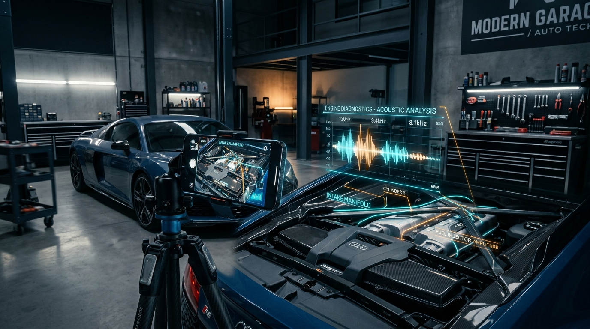
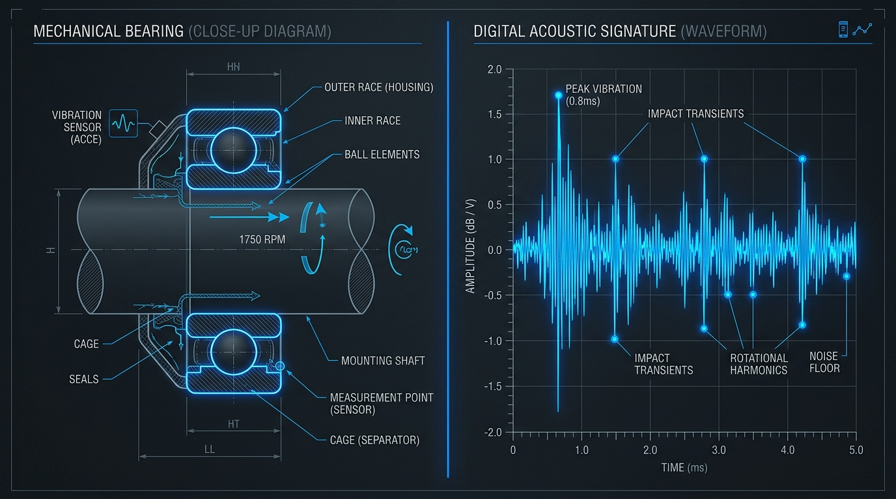
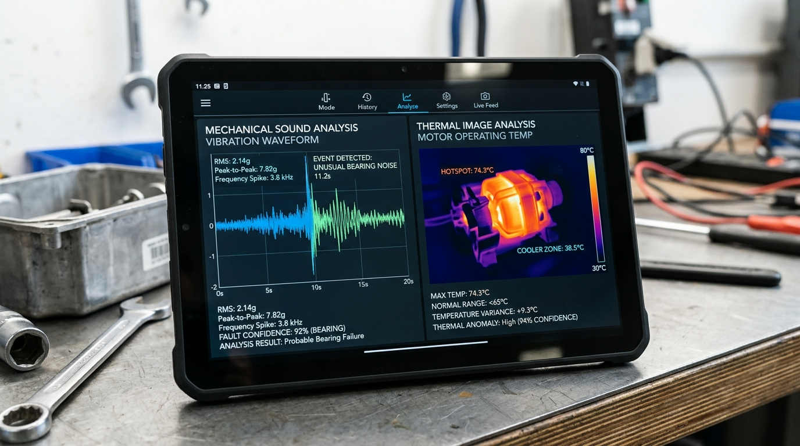
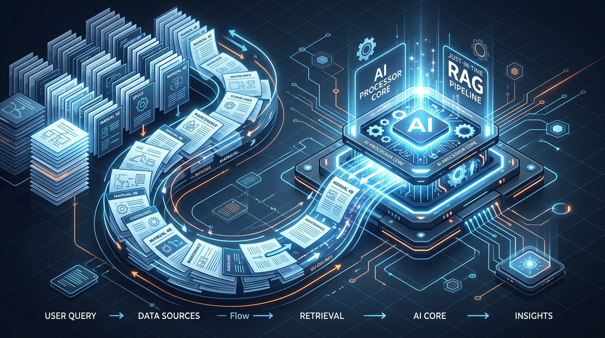
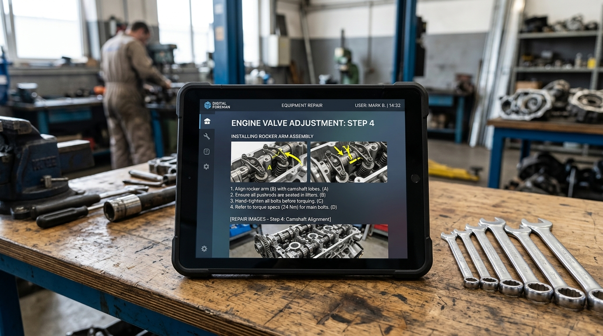

Listen & Fix
The Multimodal AI Revolution in Mechanical Diagnostics

From Diagnostic Guesswork to Data-Driven Authority: How the 'Digital Foreman' is Revolutionizing Mechanical Repair
Imagine standing in your driveway at 7:00 AM, confronted by a rhythmic, metallic clicking emanating from your car's engine bay. In the past, this sound represented a descent into uncertainty—a frantic search through forums, a costly tow, and the anxiety of potential exploitation at a repair shop. Today, the 'Listen & Fix' ecosystem transforms that acoustic signature into an actionable blueprint for repair.
By leveraging the Google Gemini 3 Flash model, this platform transcends the limitations of traditional diagnostic tools. It doesn't just provide a list of possibilities; it 'hears' the specific frequency of a failing bearing, 'sees' the subtle discoloration of a leaking gasket through your smartphone camera, and cross-references these inputs with real-time technical manuals.
This is a high-performance, multimodal diagnostic platform—utilizing acoustic fingerprinting for mechanical systems—designed to bridge the gap between complex mechanical failure and precise, data-driven resolution. By integrating 'Just-in-Time' Retrieval-Augmented Generation (RAG) with a sophisticated 'Digital Foreman' design philosophy, Listen & Fix empowers both DIY enthusiasts and professional technicians with the sensory perception and technical authority of a master mechanic.

The Multimodal Diagnostic Engine: Sensory Perception Reimagined
At the heart of the Listen & Fix ecosystem lies a diagnostic pipeline that rejects the limitations of traditional signal processing. While legacy systems rely on manual feature extraction—such as Mel-frequency cepstral coefficients (MFCC) or complex spectral analysis—Listen & Fix utilizes the native multimodal capabilities of Gemini 3 Flash. This allows the system to process raw acoustic signatures (44.1 kHz / 24-bit) directly, identifying squeals, knocks, and clicks with unprecedented accuracy.
The integration of visual telemetry further refines this process. When a user records a video of a malfunctioning HVAC compressor, the AI synchronizes the audio spikes with visual anomalies like excessive vibration or frost accumulation. This multimodal fusion enables the detection of micro-fractures or bearing wear long before they lead to catastrophic failure. Every diagnosis is accompanied by a confidence score (0.0 to 1.0) and a severity rating, ensuring that users understand the urgency of the issue.

The Four-Step Diagnostic Workflow: Precision in the Palm of Your Hand
The user experience is anchored by the ListenFixAssistant, a React-based wizard designed to minimize cognitive load while maximizing data accuracy. The workflow follows a structured four-stage progression:
- Capture Users provide the 'sensory' data by recording audio/video or uploading high-resolution photos.
- Details A 6-step context wizard gathers essential metadata, including equipment type (vehicle, appliance, HVAC), make, model, year, and the user’s DIY skill level.
- Analyzing As data streams to the backend, the UI provides real-time progress updates via an NDJSON stream, keeping the user informed with statuses like 'Analyzing engine harmonics...' or 'Querying service bulletins.'
- Results The final output is an interactive RepairGuide dashboard. This is a localized, equipment-specific protocol containing tool lists, parts sourcing, and step-by-step instructions.
Just-in-Time RAG: Grounding AI in Verified Technical Authority
To eliminate the 'hallucinations' often associated with large language models, Listen & Fix employs a 'Just-in-Time' Retrieval-Augmented Generation (RAG) pipeline. When a piece of equipment is identified, the DocumentCrawlerService immediately initiates a targeted search for official service manuals and technical bulletins from trusted sources like iFixit, NHTSA, and RepairPal.
The system cleans these documents, using Gemini to strip away advertisements and navigation menus to extract only critical technical specifications, torque settings, and wiring diagrams. These segments are then converted into high-dimensional vector embeddings using the gemini-embedding-2-preview model. This dual-path RAG implementation guarantees that every piece of advice provided by the 'Digital Foreman' is anchored in verified engineering reality.

Technical Architecture: Built for Performance and Scale
To translate these advanced diagnostic concepts into a functional reality, the platform relies on a modern full-stack implementation. The ecosystem is built on a robust Next.js framework, utilizing the @google/genai SDK to orchestrate complex AI pipelines. The backend architecture is designed to handle high-stakes data and is optimized for serverless environments to ensure rapid response times. Key services include the DiagnosisService, a TypeScript library that processes multimodal inputs, and the DocumentCrawlerService, which handles background ingestion. For large media files, the system employs a resumable upload protocol via the Gemini Files API, supporting assets up to 2GB.
interface DiagnosisRequest {
media: File[];
equipmentInfo: {
make: string;
model: string;
year: number;
type: string;
};
userSkillLevel: 'beginner' | 'intermediate' | 'professional';
}
async function analyzeRepair(req: DiagnosisRequest): Promise<RepairGuide> {
const mediaUris = await uploadToGemini(req.media);
const diagnosis = await gemini.generateContent([
...mediaUris,
req.equipmentInfo
]);
return formatRepairGuide(diagnosis);
}This architecture ensures that even complex diagnostic tasks, involving multiple video frames and large technical manuals, are processed with industry-leading latency and precision.

The 'Digital Foreman' Design System: Authority Through Design
While the backend handles the technical heavy lifting, the user interface must function as a calibrated instrument to maintain professional trust. The 'Digital Foreman' design system prioritizes a 'Technical Editorial' aesthetic that emphasizes clarity. A central tenet is the 'No-Line Rule,' which prohibits the use of 1px solid borders. Instead, space and hierarchy are defined through tonal shifts in background colors.
The typography utilizes a dual-typeface system: Inter for authoritative headlines and Public Sans for high-legibility body text, essential for reading in dimly lit garages. The color palette is rooted in stable blues and charcoals, with a sophisticated burnt orange reserved for critical warning states. These visual principles create a UI that feels as sturdy and reliable as the physical tools in a technician's chest.
Safety Protocols and Automated Parts Sourcing
Safety is the primary architectural constraint of the Listen & Fix ecosystem. The system injects dynamic, equipment-specific safety protocols into every repair guide. For vehicle repairs, it mandates warnings regarding jack stands and hazardous fluids; for electrical work, it emphasizes Lock-Out/Tag-Out (LOTO) procedures.
Furthermore, any diagnosis with a confidence score below 89% or a 'Critical' severity rating automatically triggers a 'Human-in-the-Loop' (HITL) flag, recommending professional intervention. To close the loop, the system includes automated parts sourcing, identifying exact part numbers and executing parallel queries to local retailers. By providing a 'Supplier Matrix' with live availability, Listen & Fix ensures users have the exact components and safety knowledge required to fix it correctly the first time.
.png)
Conclusion
The Listen & Fix ecosystem represents a paradigm shift in how we interact with the mechanical world. By synthesizing multimodal AI, real-time technical retrieval, and an authoritative design philosophy, it transforms the solitary frustration of mechanical failure into a guided, data-driven journey. Whether it is a homeowner fixing a dishwasher or a technician diagnosing a complex drivetrain issue, the 'Digital Foreman' provides the clarity and precision needed to maintain operational continuity. As AI continues to evolve, systems like Listen & Fix will become indispensable, turning every user into a master of their own environment.